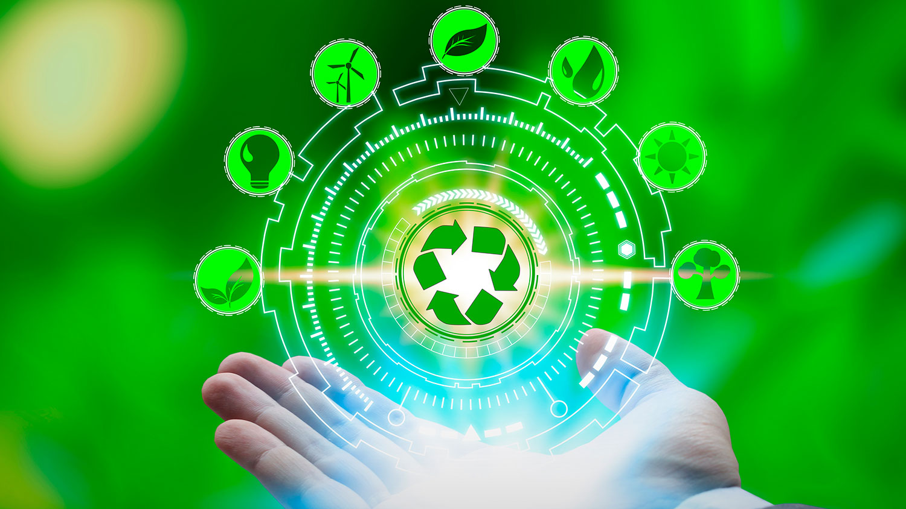

Calculadora de Huella de Carbono
Esta herramienta te ayuda a medir y reducir tu impacto ambiental.
1.¿Qué es la Huella de Carbono?
La huella de carbono es un indicador ambiental:
- El término “Huella de Carbono” hace referencia a la suma de los gases de efecto invernadero que son emitidos a la atmósfera producto de la actividad humana. Estas emisiones pueden ser cuantificadas en diferentes niveles o enfoques, ya sea a nivel país, ciudad, empresa o incluso de manera individual.
- Se puede distinguir entre huella primaria y huella secundaria:
- Huella primaria: Son las emisiones directas de CO2 sobre las que se tiene control directo, como las que provienen del combustible empleado en el hogar y el transporte.
- Huella secundaria: Tiene en cuenta las emisiones indirectas durante todo el ciclo de vida de los productos utilizados, ya sean alimentos o tecnología. Esto incluye la manufactura, el transporte y el descarte de estos productos.
- Ejemplos de huella secundaria: Desde una búsqueda en Google hasta los procesos industriales de gran escala, todo puede ser evaluado mediante la huella de carbono.
-Objetivo de la Calculadora de Huella de Carbono
Una calculadora de huella de carbono ayuda a medir las emisiones de gases que generamos con nuestras actividades diarias. Su objetivo es concienciar sobre el impacto ambiental y ayudar a reducirlo, promoviendo un futuro más sostenible.

-Actúa hoy para reducir tu huella de carbono:
- Evite el plástico de un solo uso, opte por llevar su propia botella de agua.
- Haz del baño corto un hábito; 5 minutos son suficientes para una ducha refrescante.
- Limitar el consumo de productos de origen animal; Explorar opciones vegetales es una gran alternativa.
- Elige transporte ecológico: bicicleta, autos eléctricos o, mejor aún, caminar.
- Planta un árbol, un pequeño gesto con un gran impacto.
-Objetivo del Estudio o Proyecto
El objetivo de este proyecto es ayudar a las personas y organizaciones a medir y reducir su huella de carbono, promoviendo prácticas sostenibles para mitigar el cambio climático.
2.¿Cómo Funciona una Calculadora de Huella de Carbono?
Una calculadora de huella de carbono transforma las actividades diarias, como el consumo de energía, transporte y alimentación, en un valor de emisiones de CO₂e, ayudando a comprender el impacto ambiental.
- Para individuos: la calculadora pregunta sobre el uso de energía en el hogar, los hábitos de transporte (frecuencia de viajes, tipo de vehículo), el consumo de alimentos y otros aspectos del estilo de vida.
-Acciones sostenibles para reducir tu huella de carbono
Hemos recopilado algunas sugerencias sobre cómo puedes reducir tu huella de carbono. ¡Haz click en el botón para obtener una lista!
3.Herramientas de Evaluación de Sostenibilidad
Las herramientas de sostenibilidad miden aspectos clave del impacto ambiental, como el uso de energía y los residuos generados. Además de la huella de carbono, estas herramientas ayudan a comprender el impacto total de nuestras acciones sobre el planeta.
